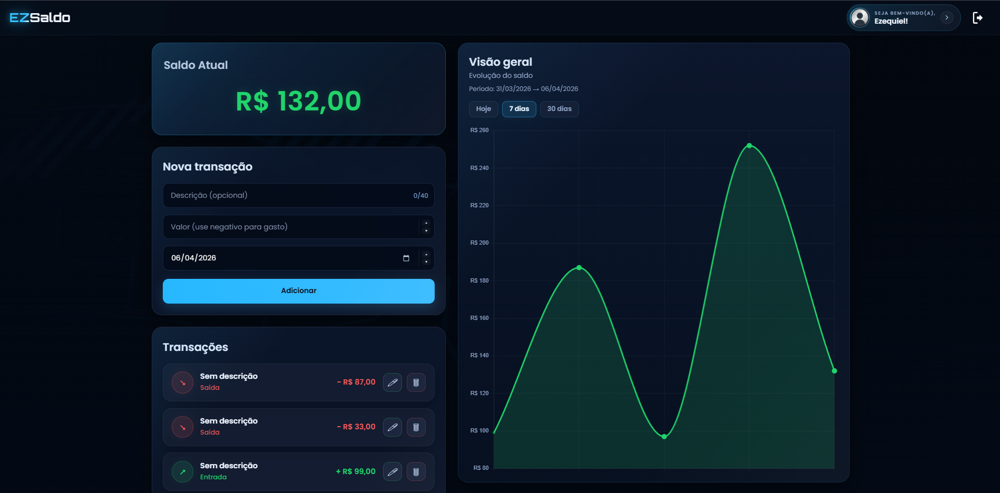
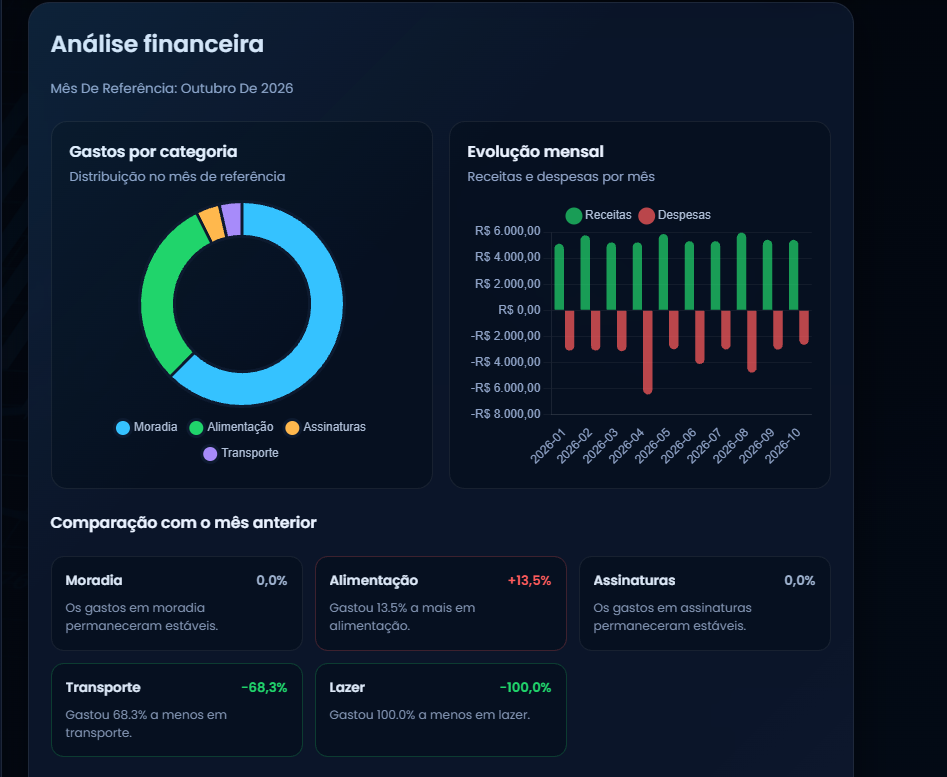

Transações no seu ritmo
Adicione entradas e saídas, organize por categoria e mantenha tudo em um histórico fácil de consultar.
Registre o que entra, acompanhe o que sai e descubra os hábitos por trás do seu saldo. O EZSaldo reúne o essencial para você decidir com mais clareza.
Disponível no navegador e para Android. O APK abre direto no celular, sem Expo Go.

Uma rotina financeira melhor começa com informações fáceis de registrar e simples de entender.
Adicione entradas e saídas, organize por categoria e mantenha tudo em um histórico fácil de consultar.
Veja a movimentação do seu dinheiro ao longo do tempo e entenda o resultado de cada período.
Explore gastos por categoria, evolução mensal e comparações para perceber padrões que passariam despercebidos.
O EZSaldo transforma lançamentos do dia a dia em uma visão mais útil: onde você gastou, como seus meses se comparam e o que merece atenção.

Do primeiro lançamento à visão completa das suas finanças.
Acesse pelo navegador ou instale o aplicativo Android.
Anote entradas e saídas conforme elas acontecem.
Consulte seu saldo, histórico e análises quando precisar.
O EZSaldo está disponível para usar no navegador ou instalar no Android.
Acesse de onde estiver e comece a organizar suas finanças sem instalar nada.
Acessar EZSaldoBaixe o APK diretamente do release mais recente do projeto no GitHub.
Baixar APKO download é feito pelo GitHub Releases. Para ver todas as versões, acesse o link “Releases” no rodapé.
Uma visão mais clara está a um lançamento de distância.